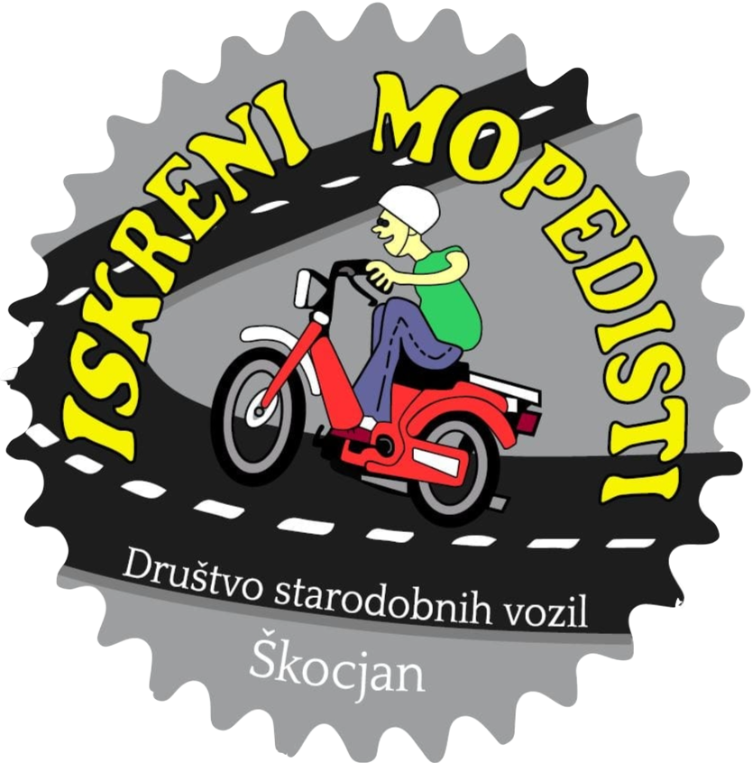

AKTUALNO
Tako kot tudi vsi tapravi športniki smo tudi Iskreni mopedisti imeli priprave na Pašman 2024. Prevozili smo prelas NassFeld, Šli po napolitanke v Loacker in naprej v Lienz… Prespali smo v lepi vasici Lainach, kjer so imeli ravno v soboto veliko veselico, tako da so bili Tomosi največja atrakcija. Naslednji dan smo se podali na Großglockner 2572m… Vreme smo imeli sončno, ni bilo gužve, Tomosi pa spet največja atrakcija… Skupno prevozili 800km… Brez težav… Tako da… Tomos je zakon Komaj čakamo na naslednjo vožnjo in Pašman prihajamo!!!